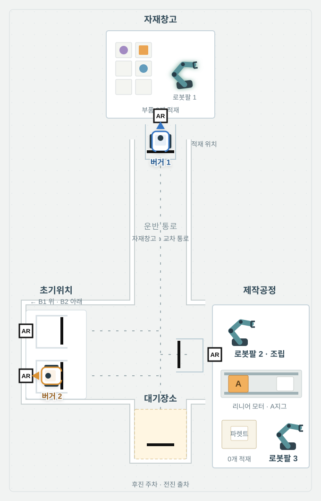
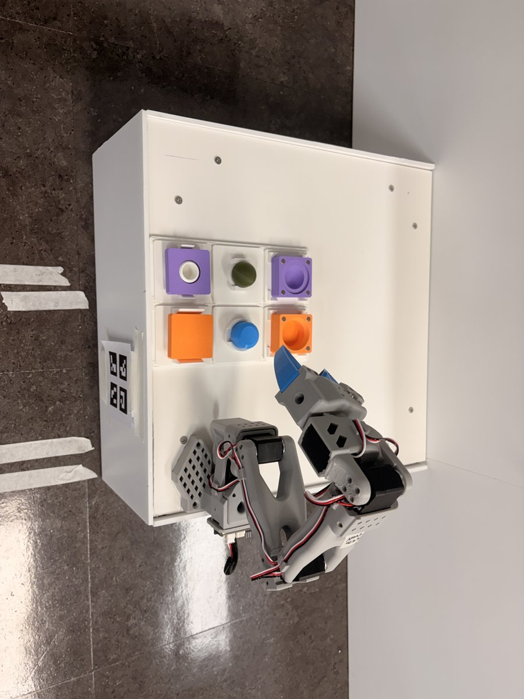

스마트플랜트 · 팀장·PM과 개발 지원
팀장·PM으로 프로젝트를 이끌며, 팀원 피드백과 기술 지원, 웹사이트 제작 및 하드웨어 제작 지원을 맡고 있습니다.
전체 시스템
Host가 주문과 작업 순서를 관리하고, 이동 로봇 2대·로봇팔 3대·리니어 장치가 운반·조립·적재를 수행하도록 구성하는 팀 프로젝트입니다.

내가 맡은 핵심 · 팀장 / PM
프로젝트의 기획·팀 운영과 진행 관리를 맡고 있습니다. 팀원들의 진행 상황과 의견을 모아 작업 방향을 조율하고, 구현 과정에서 함께 확인할 사항을 정리합니다.
팀원 피드백 · 문제 해결 방향 제안
팀원이 겪는 문제를 듣고 무엇을 점검하고 어떻게 조치하면 좋을지 방향을 제안합니다. 피드백을 바탕으로 기술적인 접근 방법을 함께 검토하며 개발을 지원합니다.
웹사이트 제작 · 공정을 눈으로 공유
공정 설명과 시뮬레이션을 위한 웹사이트를 제작했습니다. 주문·운반·조립·적재의 흐름을 화면으로 보여주어 팀이 전체 시스템을 이해하고 의견을 나눌 수 있도록 구성했습니다.
하드웨어 제작 지원
팀원들의 장치 구성과 하드웨어 제작을 지원했습니다. 제작 과정에 함께 참여하고 문제가 생겼을 때 조치 방향을 논의하며 실물 시스템 구성을 돕고 있습니다.
현재 진행 중인 프로젝트입니다. 개별 장치 개발과 실물 통합은 팀원들과 함께 진행하고 있습니다.
팀원의 문제를 듣고, 다음 조치를 함께 정하기
문제가 발생하면 팀원 피드백을 바탕으로 점검·조치 방향을 제안하고, 웹과 실물 제작을 연결하는 지원 역할을 맡고 있습니다.
팀장 · PM의 문제 대응 흐름
- 팀원 피드백과 문제 상황 공유
- 점검 항목과 기술적 접근 검토
- 조치 방향 제안 · 제작 지원
- 팀 진행 상황에 맞춰 다음 작업 조율
현재 수행 중인 협업 방식 · 실물 통합 결과는 추후 정리

문제 파악 · 팀원 피드백을 출발점으로
개별 개발 과정에서 막히는 부분을 팀원에게 듣고, 발생한 현상과 작업 상황을 함께 살핍니다. 팀이 공통으로 이해할 문제와 확인할 항목을 정리하는 데 초점을 둡니다.
기술 지원 · 점검과 조치 방향 제안
문제가 생기면 어떤 부분을 확인하고 어떤 방법으로 조치할지 의견을 제안합니다. 팀원이 담당한 구현을 진행할 수 있도록 접근 방법을 함께 검토하고 피드백을 주고받습니다.
개발 지원 · 웹사이트와 실물 제작
제작한 웹사이트로 전체 공정과 장치 역할을 공유하고, 하드웨어 제작에도 참여해 팀원의 작업을 돕습니다. 기획을 팀의 개발 작업과 연결하고 진행 상황에 맞춰 다음 작업을 조율합니다.
개인 기여는 팀장·PM, 피드백과 기술 지원, 웹사이트 제작, 하드웨어 제작 지원입니다. 프로젝트 최종 성과와 실물 통합 검증은 진행에 따라 추가할 예정입니다.